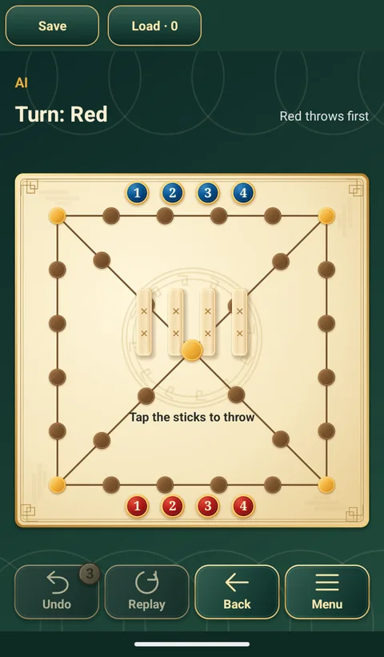

Trò chơi bàn cổ điển › Trò chơi › Yutnori

Yutnori
윷놀이 · Trò ném que Hàn Quốc
Trò chơi ngày Tết truyền thống của Hàn Quốc. Ném bốn que yut, đưa quân chạy quanh bàn và đi đường tắt qua giữa bàn từ các góc.
Cách chơi và luật Yutnori
- Mục tiêu: đưa cả bốn quân đi theo vòng ngoài hoặc đường tắt, rồi vượt qua góc xuất phát để về đích.
- Mỗi lượt tung bốn thanh gậy: 1, 2, 3 hoặc 4 mặt phẳng ngửa lên thì đi 1, 2, 3 hoặc 4 bước (Do, Gae, Geol, Yut); tất cả mặt tròn ngửa lên thì đi 5 bước (Mo).
- Tung được Yut hoặc Mo thì được tung thêm một lần.
- Sau khi về góc xuất phát, đi thêm một bước để về đích.
- Đến chỗ quân mình thì chồng lại và từ đó đi cùng nhau. Đến chỗ quân địch thì đưa tất cả quân địch ở đó ra ngoài bàn và được tung thêm.
- Dừng ở góc có lối chéo hoặc ở tâm thì lần đi tiếp theo tự đi đường tắt. Nếu chỉ đi qua ngã rẽ mà không dừng thì tiếp tục đường hiện tại.
- Ứng dụng dành cho hai người và không có Back Do (lùi một bước). Đi theo kết quả hiện tại trước khi tung thêm. Yut/Mo đồng thời bắt quân cũng chỉ được tung thêm một lần.
Yutnori trong ứng dụng
- Mỗi bên bốn quân, chạm vào que để ném.
- Chơi với máy hoặc với bạn trên một máy.
- Cùng ứng dụng miễn phí này còn 11 trò chơi cờ cổ điển khác, tất cả đều chơi được offline.

Các trò chơi khác trong ứng dụng
 Cờ thú
Cờ thú Cờ vua
Cờ vua Cờ tướng
Cờ tướng Shogi
Shogi Cờ caro
Cờ caro Cờ đam
Cờ đam Cờ bốn
Cờ bốn Cờ nhảy
Cờ nhảy Lục chiến kỳ
Lục chiến kỳ Cờ Ludo
Cờ Ludo Cờ máy bay
Cờ máy bayChơi Yutnori miễn phí
Trên điện thoại và máy tính bảng Android, không cần mạng.